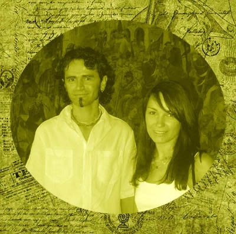
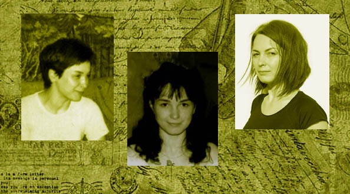
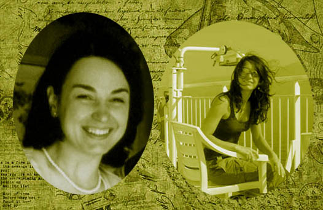

Renata Klimara była pierwszym dzieckiem Zofii i Tadeusza. Urodziła się 17 września 1973 roku w Zakopanem. Była uroczym, spokojnym dzieckiem, jeśli nie liczyć pewnej przypadłości, jaka jej opiekuńczą i cierpliwą mamę doprowadzała do białej gorączki. Otóż maleńka Renia nie przepadała za jedzeniem. Dopóki ssała mleczko, było w porządku, ale etap chleba czy mięska to była męczarnia. Mogła trzymać w ustach kąsek nawet dwie, trzy godziny. Nie pomagały groźby i kary. Renatka patrzyła szeroko otwartymi, ślicznymi oczętami i robiła swoje. Szczęśliwie wszystko przeszło, kiedy stała się małą dziewczynką, na jakiej spoczęły nowe obowiązki. Otóż urodziła się siostrzyczka, Małgorzata. Renia ze wszystkich sił starała się pomagać mamie, choć sama jeszcze była dzieckiem. A potem przeprowadzka do Lubnia, narodziny kolejnej siostry i braciszka, nowi ludzie, nowe miejsce. Renata świetnie sobie radziła w tych okolicznościach i, jak się potem okazało, zmiany w jej życiu to norma.
Po ukończeniu Szkoły Podstawowej w Lubniu zdała do słynnego Licum Sztuk Plastycznych im. Kenara w Zakopanem. Codziennie dojeżdżała do szkoły autobusem. Po kilku dniach zauważyła, że czeka na nią wolne miejsce, choć wszystkie inne były zajęte. Niby przypadkiem obok siedział sympatyczny blondyn z kręconymi niczym u cherubinka włosami. Rychło się okazało, że chodzą do tej samej szkoły, ale młodzieniec o jedną klasę wyżej. Było do przewidzenia, że taka znajomość nie mogła się szybko zakończyć, skoro jeździli przez kilka lat tym samym autobusem. Gorzej było w wakacje. Ale i tu zaprzyjaźnieni nastolatkowie sprytnie sobie poradzili. Postanowili poznać ze sobą swoich rodziców. I od tej pory byli już jak jedna wielka rodzina, spędzająca razem sporo czasu.
Wybór szkoły wyższej nie był problemem - oboje rozpoczęli naukę w Akademii Sztuk Pięknych w Krakowie. Nie marzyła im się kariera artysty malarza, lecz sztuka w przedmiotach użytkowych. Tego właśnie postanowili się nauczyć.
Romantyczna opowieść mogłaby jeszcze zająć kilkanaście stron, gdyby nie temperament i natura naszej bohaterki. Po przeprowadzce do Krakowa zamieszkała ze swoim szkolnym przyjacielem, a wkrótce, co było do przewidzenia, wzięli ślub. Zamieszkali w domu męża, wraz z jego wielką rodziną. I to akurat nie było spełnieniem marzeń ambitnej, energicznej i pełnej pomysłów Renaty. Do życia potrzebowała powietrza, przestrzeni, działania i samodzielności. Nie była stworzona do mieszczańskiej stabilizacji i rytmu życia ustalonego przez innych. Na krótko wyrwali się na swoje zamieszkując w wynajętym mieszkaniu, ale tam właśnie wyszła na jaw bolesna różnica między małżonkami. Renata miała już swoje sukcesy zawodowe, wciąż się rozwijała, zarabiała, chciała podróżować i robić coś ciekawego. Jej mąż był tego przeciwieństwem.
W głębi duszy wrażliwa i dobra, nie miała odwagi prosto tak porzucić męża, bo nie spełnił jej oczekiwań. Znalazła, jak zawsze, dyplomatyczne wyjście. Wyjechała do Wiednia, gdzie mieszkała już wówczas część jej najbliższej rodziny. Miała zarobić na remont ich osobnego mieszkania. W Wiedniu odżyła, chociaż musiała ciężko pracować, by się utrzymać. Wszystko to było lepsze, niż gnuśne życie w stadle małżeńskim.
Nauczyła się niemieckiego języka, a także podszlifowała kulejący dotąd angielski. Prócz podrzędnych prac zarobkowych, szukała tego, co dawałoby jej spełnienie zawodowe. Pewnego dnia wpadła w oko pewnemu Austriakowi. Trudno się temu dziwić, bo była śliczną młodą kobietą, utalentowaną, miłą, energiczną i pracowitą. Znajomość była niezwykle burzliwa, zaowocowała nie tylko wieloma wspaniałymi zagranicznymi podróżami, ale i dramatami. Choć bilans tego związku jest ujemny, to pozwolił jej ostatecznie wybić się na niepodległość i na zawsze uwolnić od mycia podłóg w cudzych domach. To ostatnie zajęcie, choć było tylko kilkudniowym epizodem, uświadomiło jej, że tylko wytrwałością, pracą i aktywnością można w obcym kraju osiągnąć sukces.
Porzuciła Wiedeń, w jakim spotkało ją sporo nieprzyjemności i osiadła we Włoszech. Tam natychmiast rozkręciła swój nowy biznes (projektowanie i urządzanie powierzchni biurowych) i nauczyła się włoskiego. Nadal atrakcyjna, miała wielu adoratorów, ale po dwóch małżeństwach niespieszno jej było do nowego związku. Zapowiadało się, że zostanie panną, co zresztą w żartach deklarowała. Nic więc dziwnego, że gromem z jasnego nieba była dla bliskich wiadomość, że... jest mężatką! Po dwóch uroczystych ślubach, tym razem postawiła na ascezę. A raczej szaleństwo. Ślub odbył się niespodziewanie, także tak nowożeńców, w maleńkim, uroczym, romantycznym miasteczku opodal Wenecji. Panował upał (był lipiec), właściwie nie musieli się specjalnie ubierać - biała koszula, biała prosta płócienna sukieka. Nie zaprosili nikogo. Był 2006 rok.
Kim jest tajemniczy wybranek? Długo pozostawało to zagadką nawet dla bliskich. Młodzi wiedli bowiem życie prawdziwych artystów, ludzi wolnych od zgrzybiałych zasad, szczęśliwych, niezależnych i zakochanych w sobie. Podróżowali, zarabiali na tym, co oboje kochali - na pracy twórczej, byli razem zawsze i wszędzie. Renata i Antonio. Antonio i Renata.
Postanowili jednak osiąść w Wiedniu, jaki dla obojga był bardziej niż konserwatywne Włochy perspektywiczny. Zamieszkali w wynajętym mieszkaniu-studio w centrum miasta. Antonio zarabiał malując, Renata wróciła do projektowania. Mimo pozornej stabilizacji, nigdy nie zrezygnowali z podróży i szaleństwa w podejmowaniu decyzji. Ale wydarzyło się coś, co zmusiło ich do zadumy i stabilizacji. 26 stycznia 2014 roku przyszła na świat ich córeczka Wiktoria. Dla ponad-czterdziestoletniej kobiety i o trzy lata młodszego męża był to cud i niewyobrażalne szczęście. Od tego dnia wszystko w ich życiu było już inne. To znaczy takie samo, ale z wpisaną Wiktorią i jej potrzebami. Małżonkowie zrezygnowali z części atrakcji, by bezgranicznie i z wielką miłością poświęcić się ukochanej córeczce.
Wydawało się, że ta urocza i nietuzinkowa rodzina wreszcie przestanie wszystkich zadziwiać. Ale to nie oni! Wiedeń stał się dla nich za ciasny, a miasto z paskudnym powietrzem, zatrutym jedzeniem i coraz mniej ciekawymi sąsiadami zbrzydło im. Przeprowadzili się do Niemiec. To nadzwyczaj odważna decyzja. O ile w Wiedniu mieli sporo krewnych i przyjaciół, a do Polski było kilka godzin jazdy, to w odległym o 1000 kilometrów od Polski miasteczku, gdzie osiedli, nie znają nikogo. Ale nie martwi ich to. Wokół rozciągają się pola, pasą się krowy i kozy, kręcą się wiatraki, na dachach błyszczą panele słoneczne. Jest cicho, spokojnie, a zaprzyjaźniony Sycylijczyk, prowadzący opodal ekologiczne gospodarstwo, dostarcza im świeże mięso, mleko, warzywa.
Renata pracuje w pracuje w wielkiej międzynarodowej korporacji jako architekt wnętrz biurowych. Realizuje projekty, często jest w podróżach służbowych. Ponieważ zna polski, niemiecki, angielski i włoski, bierze udział w negocjacjach z dostawcami. Ma ośmiosobowy zespół do pomocy i piękny "corner office" z najnowszym i najszybszym komputerem oraz meblami wybranymi przez siebie. Biuro dekorują obrazy jej męża. Jak wszędzie i zawsze i we wszystko wkłada i tu całą swoją duszę i oryginalność. Przykład? Podaje najsmaczniejszą kawę w całym biurze. Parzy ją w prawdziwym włoskim czajniczku, przywleczonym z jakiejś podróży.
Taka właśnie jest Renata.